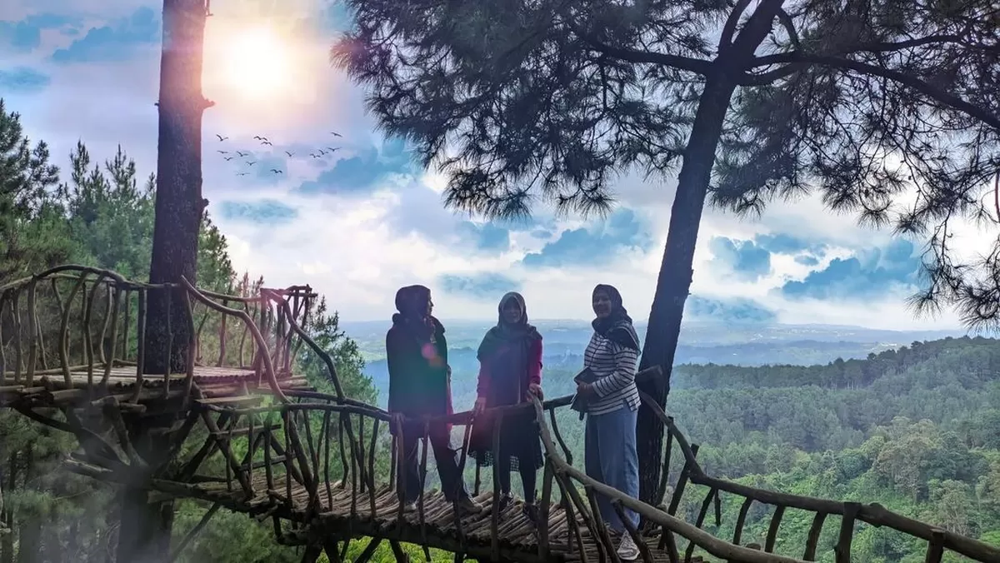

Yogyakarta selalu memiliki daya tarik istimewa, tak hanya untuk wisata budaya, tapi juga kegiatan alam terbukanya. Kontur alam yang bervariasi mulai dari pantai, goa, hingga pegunungan menjadikannya surga bagi para pecinta tantangan dan rekreasi korporat.
Bagi Anda panitia acara kantor yang sedang mencari referensi destinasi, berikut adalah 7 lokasi outbound dan team building terbaik di Jogja yang sangat direkomendasikan:
01. Ledok Sambi (Kaliurang)
Berada di Kabupaten Sleman, Ledok Sambi menawarkan area lahan rumput luas yang terbelah oleh aliran sungai kecil berair jernih. Nuansa sejuk khas lereng Gunung Merapi sangat terasa. Permainan favorit di sini biasanya meliputi Spider Web, Dragon Ball, dan Flying Fox.
02. Kalikuning Park (Lereng Merapi)
Siapa yang tak tertantang beraktivitas dengan latar belakang kegagahan Gunung Merapi? Biasanya, outbound di sini dipaketkan secara khusus dengan Jeep Lava Tour Merapi. Peserta akan diajak melintasi sisa erupsi, singgah di Museum Sisa Hartaku, dan bermanuver di Kali Kuning.
03. Goa Kalisuci (Gunungkidul)
Ingin outbound antimainstream? Cobalah Cave Tubing di Goa Kalisuci! Rombongan Anda akan menyusuri sungai bawah tanah menggunakan ban karet pelampung sambil menikmati ornamen stalaktit yang usianya ribuan tahun. Tenang, kegiatan ini dipandu instruktur profesional.
04. Puncak Pinus Becici (Bantul)
Bagi yang menyukai hawa teduh, Puncak Becici adalah primadonanya. Dikelilingi jajaran pohon pinus tinggi, lokasi ini sering digunakan institusi dari luar Jogja. Terdapat pula gardu pandang untuk melihat keindahan wilayah Bantul dari atas.
05. Sambi Resort and Spa
Mencari paket lengkap penginapan mewah plus lahan outbound? Sambi Resort memadukan desain modern dan tradisional (pedesaan). Lokasinya strategis dekat Museum Ullen Sentalu, menjadikannya opsi premium bagi jajaran manajerial perusahaan.
06. Dolan Deso Boro (Kulon Progo)
Di wilayah barat Jogja, Dolan Deso Boro menawarkan wisata edukasi dan pelestarian lingkungan. Rombongan bisa memadukan outbound dengan aktivitas membaur bersama masyarakat, seperti menanam padi atau bersepeda keliling desa Menoreh.
07. Asram Edupark
Pilihan praktis yang tak terlalu jauh dari pusat kota. Hanya berjarak 11 km, Edupark menawarkan kegiatan outbond ramah segala usia. Bahkan terdapat aktivitas Jemparingan (Panahan Tradisional gaya Mataram) dan fasilitas Glamping.
Ingin Harga Spesial Rombongan?
Konsultasikan jumlah peserta, tim kami siapkan itinerary gratis.
Baca Artikel Lainnya
Mengapa Perusahaan Wajib Mengadakan Outing?
Pelajari alasan psikologis mengapa gathering mampu menekan turnover dan meningkatkan produktivitas.
Baca
Panduan Memilih Vendor EO Gathering Jogja
Jangan asal pilih! Kenali ciri-ciri Event Organizer profesional agar dana kantor dialokasikan efektif.
Baca